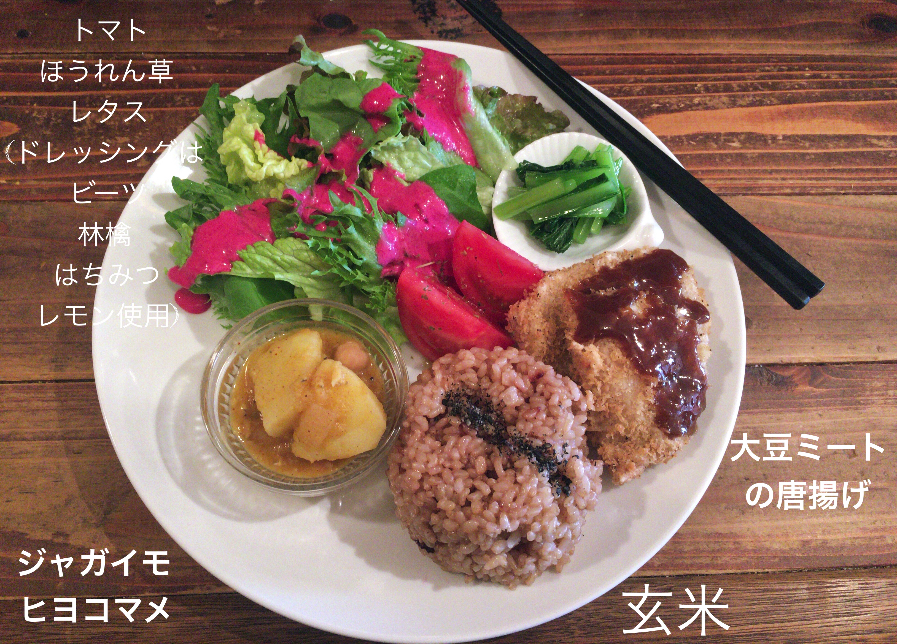

<!DOCTYPE html>
<html lang="en" dir="ltr">

<head>
  <meta charset="utf-8">
  <title>GW　REPORT</title>
</head>

<body>

</body>

</html>
<h1>SUNNY PLACE</h1>

<br>
<a href="https://www.sunnyplacekyoto.com/">SUNNY PLACE : Home page</a>
<ul>
  <nav>
    <ul>
      <header>
        <h2>~ Vegan Lunch Restaurant ~</h2>
      </header>
    </ul>
  </nav>
</ul>
<article>
  <h3>” What’s Vegan ? ”</h3>” ヴィーガニズム（Veganisum)または絶対菜食主義は動物製品の使用を一切行わない生活様式である。
  <br>1944年にイギリスで作られた言葉で、「人間は動物を搾取することなく生きるべき。」と定義された。<br>ヴィーガニズムは道徳上の観点から動物の商品化を否定し、あらゆる目的での動物製品の使用を行わないエシカル・ヴィーガニズム。<br>健康上の観点から動物性食品のみを排除するダイエタリー・ヴィーガニズム。<br>環境面から畜産業が持続可能でないとして動物製品の使用を拒否するエンバイロメンタル・ヴィーガニズムなどに分けられる。<br>（Wikipedia 参照）
</article>
<article>
  <h3>Veganを知ったきっかけ…</h3> 私がヴィーガニズムを初めて知ったのは今年の２月頃（けっこう最近）になってです。
  <br>きっかけは動画サイトYouTubeで「畜産の産業化。その肉を食べ続ける問題について〜」という動画を見たことでした。<br>肉や卵、乳製品などが体に及ぼす健康的な問題や現在の畜産業が自然環境に深刻なダメージを与えている事など、私たちの食に隠された「裏」を知ったのです。<br>その動画の中ではヴィーガニズムについて触れていませんが、これを契機に食のライフスタイルに興味を持ち、そこからヴィーガニズム運動また、ヴィーガンと呼ばれる人達を知りました。（sunny place もその一環です。）
</article>
<article>
  <h3>“SUNNY  PLAC” について…</h3>
  月曜日〜木曜日の１１時半〜１５時半まで営業。</h5>2ヶ月に１度、ヴィーガンの料理クラスを開催、お弁当や、ケータリングも受け付けている。<br>主に使われる食材は、野菜・穀物・果物など、加工食品ではなくローフード（自然食品）を使っている。<br>ヴィーガンレストランなので、肉料理や魚のフライなどは味わえないが、代用食品（主に穀物類）を使用し、限りなくその食感を再現している。（私が食べた大豆ミートでできた（フェイク）肉の唐揚げは、偽物だと知らなければ絶対に気づかないくらい食感や味付けがリアルで、噛むと肉汁が出るところまで、本物とそっくりだった。）<br>今回は食べることができなかったが、乳製品・卵の代用品として、ココナッツミルク、アーモンドミルク、ライスミルク、豆乳、豆腐エッグ、バナナエッグ、コーンスターチエッグなどが使われているようだ。<br>ヴィーガンになって肉や乳製品・卵などが食べれず、恋しくなるような心配はなさそうなので安心した。
</article>
<article>


    <h3>SUNNY PLACE   ~menu~</h3>
    <h3>注文した料理:  日替わりメインディッシュ 酵素玄米 日替わりスープ オーガニックサラダ 副菜３品 ￥1,200</h3>
  　</a>
  <br>

   </article>
     <article>
  <h3>〜初めてヴィーガンレストランを訪れての感想〜</h3> レストランを訪れた際、座った場所の近くに２冊の本が置いてあったので料理が出来上がるまで読むことにした。

  <br>『Raw Juice Recipe』と『GREEN SMOOTHIES』と言う本だ。 （本の表紙画像→Page 5）<br> その本いわく、人間は本来自然状態にある食べ物”Raw Food”を主食としていたため、体はそこから栄養を摂取して長い間健康を保ってきたのだと言う。<br> ”Raw Food”(ローフード）とは０度〜４８度の環境下にあるもしくは、人の手で加工されていない生食のことだ。加熱によって失われがちな酵素（４８度以上でほとんどの酵素は死滅する。）やビタミン、ミネラル分などを多く含んでいる食品である。<br>  　現在のアメリカや日本も含めた多くの先進国では加工食品が多く食べられ、加工肉、ファーストフード、インスタントフードなどが当たり前の時代となった。
  <br>加工食品は保存性、安全性（防腐、殺菌）、食べやすさなど、様々なメリットがあるが、栄養的な面では昔と大きく異なった食生活を送って体に負荷をかけてしまっているようだ。（その証拠に、現代には、栄養バランスの肩からくる肥満症や塩分・糖の過剰摂取による心筋梗塞・糖尿病などの生活習慣病がかつてないほどの勢いを振るっている。）<br>したがって、今求められているのは本来人の体が必要としている自然食品と日常にある便利な加工食品とのバランスを取ることだと思う。<br>自然食品を主食とするヴィーガンは健康的にも環境的にもメリットが多く、動物性食品の代用品がさらに普及していけば、誰でも簡単に菜食生活を送ることができるるため、この問題の一つの解決策に成り得る。<br>こうした食のライフスタイルが広まることで、その背後にある問題についても注目され、より一層人々に認知され受け入れられて行くことだろう。<br>  　私は今、絶対菜食主義とまではいかないが、肉・魚・卵・乳製品などの動物性食品の使用を少しずつ抑えるように食生活を慣らしている。今は肉と魚は取らず、卵・乳製品もできるだけ取り入れないようにしているので、「ラクト・オボ・ベジタリアン」（植物性食品と乳・卵を食べる）と言ったところだろう。
  <br>しかし、こういう本を読んでいると、いずれ私もヴィーガンデビューを果たせたらという思いがより一層強くなってくる。<br>

  <br>…しばらくして料理が来て、まず目に止まったのが「大豆ミート使用の（フェイク）肉の唐揚げ」だ。長らく唐揚げを目にしていなかったので、見ただけで「懐かしい」と感動した！（見た目だけでなく、味も肉そのものだった。）<br> 　次に、レタスにかかっていたドレッシングで見たことのないような鮮やかなピンク色をしていたので気になって聞いてみると、どうやらドレッシングの色は「ビーツ」という紫玉ねぎをすりつぶして液状にしたものらし。（他にも、りんご、レモン、ハチミツ　などを使用）味はさっぱりした薄味でほんのり甘くて美味しかった。
  <br> 　ジャガイモとひよこ豆の煮物はスパイスがきいていて赤飯と合わせるとうまい具合に食べやすかった。
  <br>
  <br>味もさることながら、食と健康に対する意識の高さ。加えて、素材などの新しい発見をさせてくれたと思う。<br>「本当に美味しかった！」<br>
</article>
<h4>ごちそうさまでした！</h4>
